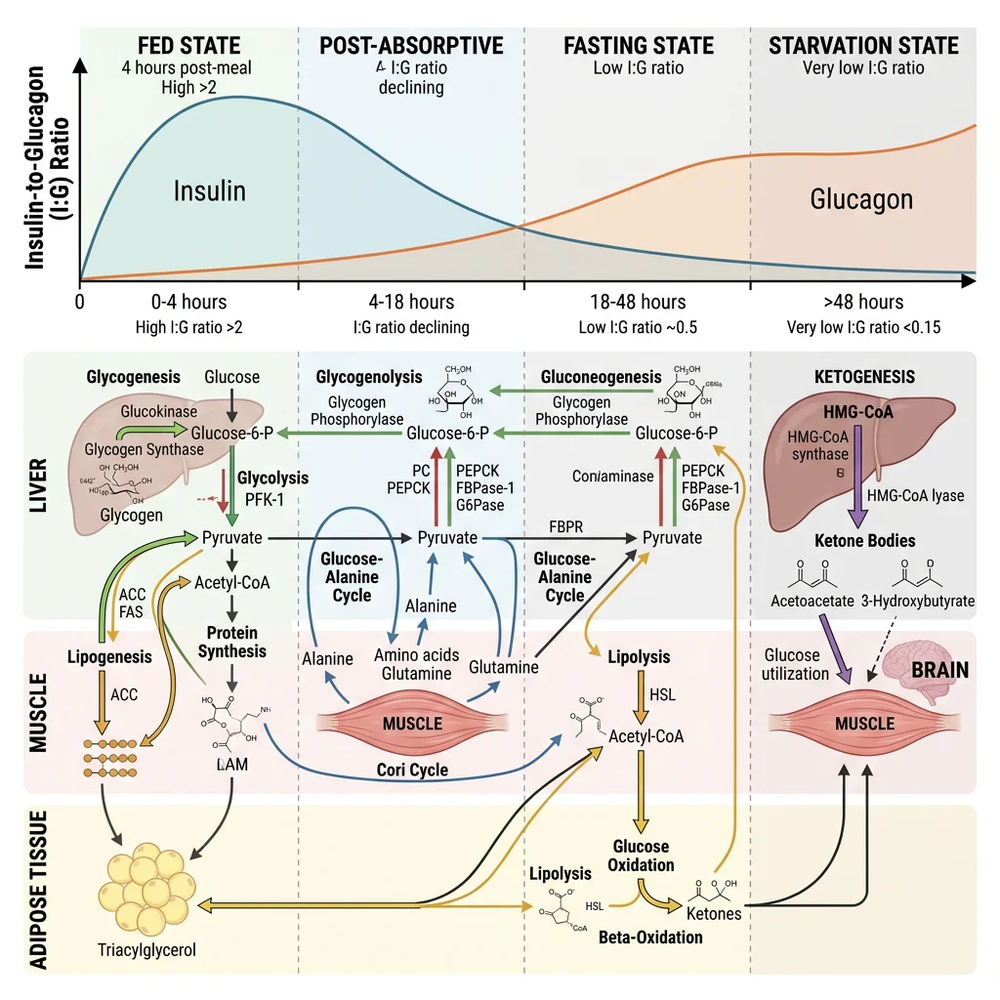
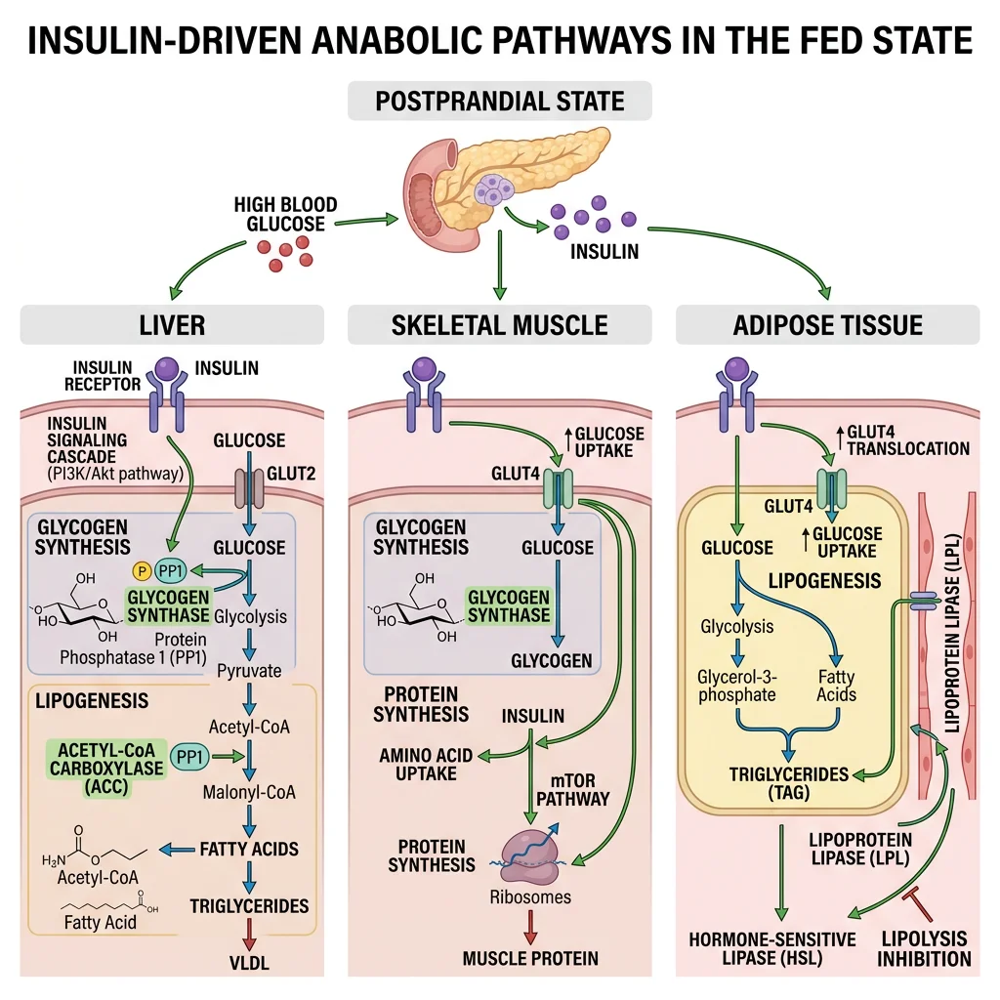
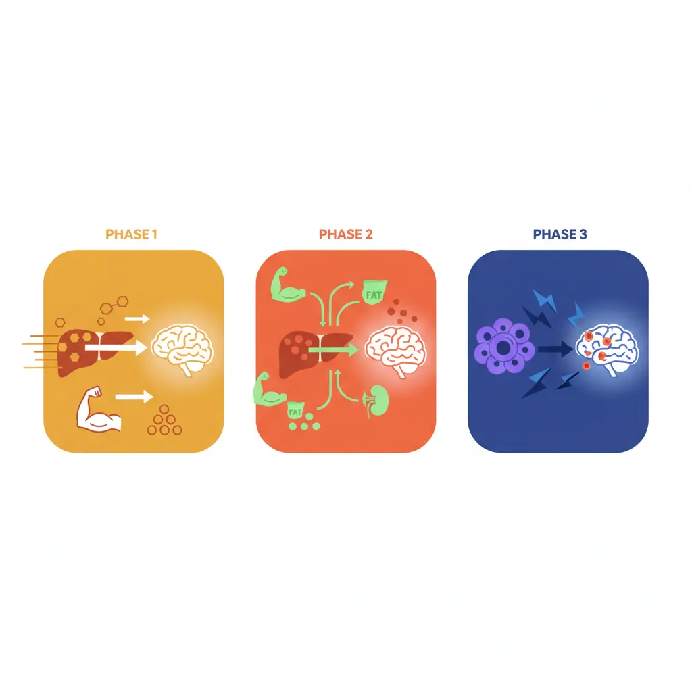
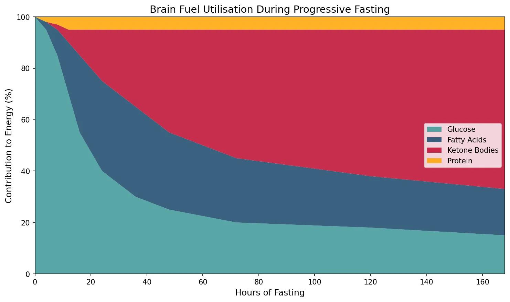
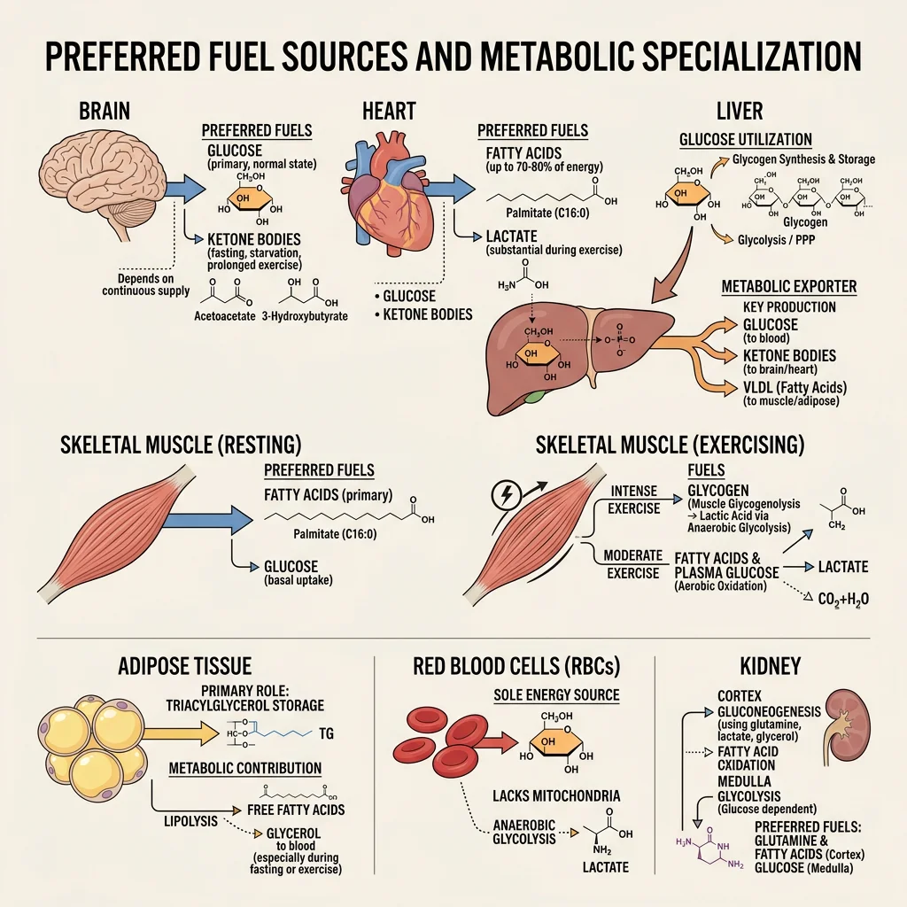
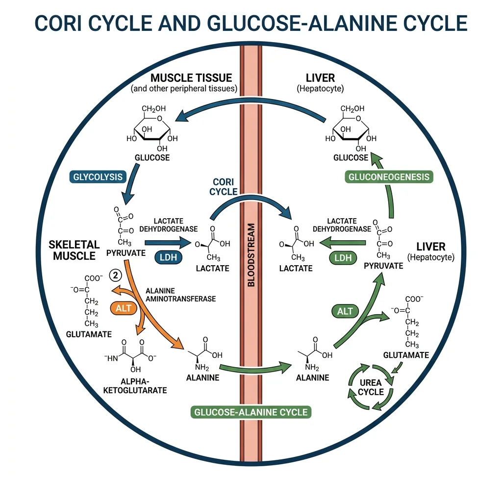

Biochemistry Mastery
Biological Chemistry Fundamentals
Atoms, bonds, functional groups, thermodynamicsWater, pH & Biological Buffers
Water polarity, pH, Henderson-Hasselbalch, blood buffersAmino Acids & Protein Structure
Amino acid classes, peptide bonds, protein foldingEnzymes & Catalysis
Kinetics, Michaelis-Menten, inhibition, regulationCarbohydrates & Lipids
Sugars, glycogen, fatty acids, cholesterol, membranesMetabolism & Bioenergetics
ATP, glycolysis, gluconeogenesis, redox carriersCitric Acid Cycle & Oxidative Phosphorylation
Acetyl-CoA, ETC, ATP synthase, oxygen dependenceSignal Transduction & Cell Communication
GPCRs, kinases, calcium, hormone cascadesNucleic Acids & Gene Expression
DNA, replication, transcription, translation, epigeneticsBrain & Nervous System Biochemistry
Neurotransmitters, ion gradients, myelin, neurodegenerationHeart & Muscle Biochemistry
Cardiac metabolism, actin-myosin, energy systemsLiver Biochemistry
Glucose homeostasis, detox, urea cycle, bileKidney Biochemistry & Acid-Base
pH regulation, ion transport, hormonal functionsEndocrine System Biochemistry
Hormone classes, signaling, glucose & stress controlDigestive System Biochemistry
Gastric acid, enzymes, bile, absorption, microbiomeImmune System Biochemistry
Antibodies, cytokines, complement, oxidative burstAdipose Tissue & Energy Balance
Triglycerides, lipolysis, leptin, obesityTissue-Specific Metabolism
Fed vs fasting, organ fuel selection, starvationMolecular Basis of Disease
Diabetes, cancer metabolism, neurodegenerationClinical Biochemistry & Diagnostics
Blood tests, liver/kidney markers, lipid panelsMetabolic States Overview
The human body continuously transitions between metabolic states based on nutrient availability, hormonal signals, and energy demands. Understanding these transitions is the culmination of everything we've studied: glycolysis, gluconeogenesis, β-oxidation, ketogenesis, the TCA cycle, oxidative phosphorylation, and hormonal control all converge here into a unified picture of how the body maintains energy homeostasis across diverse physiological conditions.

The Metabolic Timeline — From Last Meal to Starvation
Think of your metabolic state as a fuel gauge with multiple reserve tanks. After eating, you're running on premium fuel (glucose from the meal). As hours pass, you draw from reserve tanks in a specific order: (1) liver glycogen → (2) adipose triglycerides → (3) hepatic ketogenesis → (4) muscle protein. Each transition is governed by the insulin-to-glucagon ratio — the master metabolic switch that determines whether you're building (anabolic) or breaking down (catabolic).
| Parameter | Fed State (0–4 h) | Post-absorptive (4–16 h) | Fasting (16–48 h) | Starvation (>48 h) |
|---|---|---|---|---|
| Primary fuel | Dietary glucose | Liver glycogen → blood glucose | Fatty acids + emerging ketones | Ketone bodies + fatty acids |
| Insulin:Glucagon | High (≥10:1) | Moderate (~3:1) | Low (~1:1) | Very low (<0.5:1) |
| Liver activity | Glycogen synthesis, lipogenesis | Glycogenolysis | Gluconeogenesis, ketogenesis | Maximal gluconeogenesis + ketogenesis |
| Adipose activity | Lipogenesis, re-esterification | Basal lipolysis | Accelerated lipolysis | Maximal lipolysis |
| Muscle fuel | Glucose (GLUT4-mediated) | Fatty acids → glucose | Fatty acids + ketones | Fatty acids + ketones (glucose-sparing) |
| Brain fuel | Glucose (obligate) | Glucose (obligate) | Glucose + some ketones (~20%) | Ketones (60–70%) + glucose |
Fed State Overview
The fed (absorptive) state begins with nutrient absorption from the gastrointestinal tract (0–4 hours after a meal) and is orchestrated by insulin, the master anabolic hormone. Rising blood glucose triggers pancreatic β-cell insulin secretion, which acts as a metabolic "green light" for storage pathways across all tissues.
Insulin's Coordinated Actions Across Tissues
- Liver: Activates glucokinase (traps glucose), stimulates glycogen synthase (via PP1 dephosphorylation), activates SREBP-1c and ACC/FAS for de novo lipogenesis, inhibits PEPCK and G6Pase (blocks gluconeogenesis)
- Skeletal Muscle: GLUT4 translocation to membrane → glucose uptake increases 10–40 fold; glycogen synthesis via GS activation; amino acid uptake and protein synthesis via mTOR/S6K pathway
- Adipose Tissue: GLUT4 translocation; lipoprotein lipase (LPL) activation → chylomicron and VLDL triglyceride uptake; PDE3B activation → cAMP ↓ → anti-lipolytic effect; de novo lipogenesis from excess carbohydrate
- Brain: Uses glucose via GLUT1/GLUT3 (insulin-independent transporters), but insulin receptors in hypothalamus regulate appetite (satiety signal)
Fasting & Starvation Overview
The transition from fed to fasting represents one of the most elegant metabolic switches in biology. As blood glucose falls and insulin drops, glucagon (from α-cells), cortisol (from adrenals), and adrenaline (in acute stress) coordinate a catabolic programme that mobilises stored fuels in a priority sequence designed to protect the brain.
The Brain Protection Imperative
The entire architecture of fasting metabolism is designed to protect the brain's glucose supply. The brain consumes ~120 g glucose/day (20% of total body glucose consumption) but stores virtually zero glycogen or lipid. It cannot oxidise fatty acids (they don't cross the blood-brain barrier efficiently). This creates an existential problem: total liver glycogen (only ~80–100 g) would be exhausted in <24 hours if gluconeogenesis and ketogenesis didn't progressively take over. The evolutionary solution — ketone body production — replaces up to 70% of the brain's glucose requirement during prolonged starvation, dramatically reducing the need for gluconeogenesis and thereby sparing muscle protein from destruction.
Fed State Metabolism
In the fed state, the body is in anabolic mode — building glycogen, synthesising proteins, and storing excess energy as triglycerides. Every major organ participates in this post-prandial orchestration, with insulin conducting the metabolic symphony.

Hepatic Fed-State Pathways — The Metabolic Switchboard
- Glucose trapping: Glucokinase (Km ~10 mM, not inhibited by G6P) phosphorylates glucose proportionally to portal glucose concentration — only becomes active when glucose is abundant after a meal
- Glycogen synthesis: Insulin activates protein phosphatase 1 (PP1) → dephosphorylates glycogen synthase (active) and glycogen phosphorylase (inactive). Liver stores up to ~100 g glycogen (~400 kcal reserve, lasting ~18–24 hours)
- De novo lipogenesis (DNL): When glycogen stores are full, excess glucose → pyruvate → acetyl-CoA (mitochondria) → citrate (exported via tricarboxylate carrier) → acetyl-CoA (cytoplasm, via ATP-citrate lyase) → malonyl-CoA (ACC) → palmitate (FAS). SREBP-1c (insulin-activated transcription factor) drives expression of both ACC and FAS
- VLDL export: Newly synthesised triglycerides packaged with apoB-100 → VLDL particles → exported to bloodstream → delivered to adipose tissue and muscle via LPL
- Gluconeogenesis suppression: Insulin-mediated phosphorylation of FOXO1 → nuclear exclusion → reduced PEPCK and G6Pase transcription. Simultaneously, fructose 2,6-bisphosphate (elevated by insulin-activated PFK-2) allosterically stimulates PFK-1 (glycolysis) while inhibiting fructose-1,6-bisphosphatase (gluconeogenesis)
Muscle in the Fed State — Growth and Refuelling
Skeletal muscle is the primary site of insulin-stimulated glucose disposal (accounting for ~80% of postprandial glucose uptake). Insulin triggers GLUT4 vesicle translocation via PI3K/Akt signalling, increasing glucose transport 10–40 fold. Absorbed glucose is primarily directed toward glycogen synthesis (muscle stores ~400 g glycogen but cannot export glucose — no glucose-6-phosphatase). Simultaneously, insulin activates the mTOR/S6K pathway for protein synthesis: branched-chain amino acids (especially leucine) synergise with insulin to maximise muscle protein synthesis — this is the biochemical rationale behind the "post-workout meal" in sports nutrition.
Randle's Glucose-Fatty Acid Cycle — Fuel Competition
Sir Philip Randle (1963) discovered the glucose-fatty acid cycle — a reciprocal relationship between glucose and fatty acid oxidation in muscle and heart. When fatty acid oxidation is high (fasting), it generates acetyl-CoA and citrate that inhibit pyruvate dehydrogenase (PDH) and PFK-1, respectively, suppressing glucose oxidation. Conversely, in the fed state, high insulin suppresses lipolysis → low fatty acids → reduced fatty acid oxidation → PDH and PFK-1 are de-inhibited → glucose becomes the preferred fuel. This "fuel competition" explains why elevated FFAs in obesity impair glucose utilisation — the fasting-state biochemistry persists even when glucose is abundant, contributing to insulin resistance.
Fasting State Metabolism
The fasting state (4–48+ hours after a meal) is characterised by a progressive shift from glucose-based to fat-based metabolism, orchestrated by falling insulin and rising glucagon, cortisol, and growth hormone. The biochemical elegance lies in the sequential mobilisation of fuel stores — always prioritising brain glucose supply while minimising muscle protein breakdown.

Phase 1: Post-absorptive (4–16 hours) — Glycogenolysis Dominates
- Trigger: Blood glucose falls below ~5 mM → insulin ↓, glucagon ↑
- Glucagon signalling: Glucagon binds hepatocyte receptor → Gαs → adenylyl cyclase → cAMP ↑ → PKA activation → phosphorylase kinase → glycogen phosphorylase b → phosphorylase a (active) → glucose-1-phosphate → glucose-6-phosphate → free glucose (via G6Pase, liver-specific)
- Simultaneously: PKA phosphorylates glycogen synthase → inactive form. Net effect: glycogen breakdown without futile cycling
- Rate: Liver releases ~8–10 g glucose/hour, matching the brain's consumption rate of ~5–6 g/hour plus other obligate glucose users (red blood cells, renal medulla)
- Limitation: Total liver glycogen (~100 g) would be exhausted in ~12–16 hours at this rate — hence the transition to Phase 2
Phase 2: Extended Fasting (16–48 hours) — Gluconeogenesis and Lipolysis
- Hepatic gluconeogenesis progressively replaces glycogenolysis as glycogen stores deplete. Substrates include: (1) lactate from anaerobic glycolysis in RBCs, muscle, and other tissues; (2) glycerol released from adipose lipolysis (ATGL/HSL); (3) alanine from muscle protein breakdown (transamination of pyruvate → alanine → exported to liver → glucose-alanine cycle)
- Cortisol (HPA axis activated by fasting stress) enhances gluconeogenesis by upregulating PEPCK and G6Pase transcription while simultaneously promoting muscle protein catabolism (providing amino acid substrates)
- Adipose lipolysis: Falling insulin → de-repression of HSL → triglyceride hydrolysis → FFAs + glycerol released. FFAs become the primary fuel for muscle, heart, and liver, sparing glucose for the brain. FFAs travel albumin-bound to hepatocytes where they undergo β-oxidation
- Ketogenesis initiation: When hepatic β-oxidation produces more acetyl-CoA than the TCA cycle can consume (because oxaloacetate is diverted to gluconeogenesis), excess acetyl-CoA is condensed to acetoacetate and β-hydroxybutyrate — the ketone fuel for the brain
Phase 3: Starvation (>48 hours) — Ketone Adaptation
Prolonged starvation triggers a remarkable metabolic adaptation: the brain progressively increases ketone body utilisation from near-zero to 60–70% of its energy needs (upregulating MCT1/MCT2 transporters and succinyl-CoA:3-oxoacid CoA transferase). This reduces the brain's glucose requirement from ~120 g/day to ~40 g/day, which can be met by gluconeogenesis from glycerol and amino acids alone — dramatically reducing the need for muscle protein breakdown. This adaptation is the evolutionary key to surviving prolonged food scarcity: without it, a 70 kg person would lose ~75 g muscle protein/day (vs ~20 g/day with ketone adaptation), and skeletal muscle would be critically depleted within 2–3 weeks rather than surviving 40–60+ days.
import numpy as np
import matplotlib.pyplot as plt
# Simulate fuel utilisation over fasting duration
hours = np.array([0, 4, 8, 12, 16, 24, 36, 48, 72, 120, 168])
glucose_pct = np.array([100, 95, 85, 70, 55, 40, 30, 25, 20, 18, 15])
fatty_acid_pct = np.array([0, 3, 10, 20, 30, 35, 35, 30, 25, 20, 18])
ketone_pct = np.array([0, 0, 2, 5, 10, 20, 30, 40, 50, 57, 62])
protein_pct = 100 - glucose_pct - fatty_acid_pct - ketone_pct
fig, ax = plt.subplots(figsize=(10, 6))
ax.stackplot(hours, glucose_pct, fatty_acid_pct, ketone_pct, protein_pct,
labels=['Glucose', 'Fatty Acids', 'Ketone Bodies', 'Protein'],
colors=['#3B9797', '#16476A', '#BF092F', '#FFA500'], alpha=0.85)
ax.set_xlabel('Hours of Fasting', fontsize=12)
ax.set_ylabel('Contribution to Energy (%)', fontsize=12)
ax.set_title('Brain Fuel Utilisation During Progressive Fasting', fontsize=14)
ax.legend(loc='center right', fontsize=10)
ax.set_xlim(0, 168)
ax.set_ylim(0, 100)
plt.tight_layout()
plt.show()

Organ Fuel Selection
Each major organ has evolved distinct fuel preferences that reflect its unique metabolic demands, enzyme equipment, and physiological role. Understanding these preferences explains why metabolic diseases affect organs differently and why inter-organ metabolic cooperation is essential.

| Organ | Primary Fuels | Key Enzymes/Transporters | Special Features | Metabolic Role |
|---|---|---|---|---|
| Brain | Glucose (fed), ketones (fasting) | GLUT1 (BBB), GLUT3 (neurons), hexokinase (low Km) | Cannot oxidise fatty acids (BBB barrier); no significant fuel storage | Obligate glucose consumer; sets gluconeogenic demand |
| Liver | Fatty acids, amino acids, ethanol | Glucokinase (high Km), GLUT2 (bidirectional), G6Pase | Rarely uses glucose for its own energy; prefers fatty acid oxidation | "Metabolic altruist" — exports glucose, ketones, VLDL for other organs |
| Skeletal Muscle | Fatty acids (rest), glucose (exercise), BCAAs, ketones | GLUT4 (insulin-dependent), hexokinase II, CPT-1/CPT-2 | Largest glycogen store (~400 g) but cannot export glucose (no G6Pase) | Major glucose sink post-meal; exports lactate and alanine during fasting |
| Heart | Fatty acids (70%), lactate, glucose, ketones | Very high CPT-1/β-oxidation capacity, abundant mitochondria | Consumes lactate (from working muscle) as a fuel; almost entirely aerobic | Metabolic omnivore — uses whatever is available; heavily oxidative |
| Adipose | Glucose (for glycerol-3-P), fatty acids (re-esterification) | GLUT4, LPL, HSL/ATGL, DGAT | Primary energy reservoir (~100,000+ kcal in 70 kg adult) | Buffers postprandial lipid; releases FFAs + glycerol during fasting |
| Red Blood Cells | Glucose only | GLUT1, no mitochondria | No mitochondria → obligate anaerobic glycolysis → produces lactate | Obligate glucose consumer; major lactate producer for Cori cycle |
| Kidney | Fatty acids (cortex), glucose/glutamine (medulla) | G6Pase (gluconeogenic), glutaminase | Second major gluconeogenic organ (~40% of gluconeogenesis in prolonged fasting) | Gluconeogenesis + ammoniagenesis for acid-base balance |
The Heart as a Metabolic Omnivore
The heart is unique among organs: it beats continuously (~100,000 times/day), is almost entirely aerobic (oxygen extraction ~70% vs ~25% for most tissues), and has extraordinary metabolic flexibility. At rest, it derives ~70% of its ATP from fatty acid β-oxidation, switching to glucose during insulin surges and to lactate during exercise (when working muscle floods the bloodstream with lactate). The heart's ability to use lactate as fuel is mediated by MCT1 transporters and lactate dehydrogenase (LDH-H4 isoform), which converts lactate → pyruvate → acetyl-CoA → TCA cycle. In heart failure, this metabolic flexibility is impaired — the failing heart becomes overly reliant on glucose, resembling fetal cardiac metabolism ("metabolic reversion").
Starvation Adaptation & Ketosis
The starvation adaptation is a masterpiece of evolutionary biochemistry that allows humans to survive 40–60+ days without food. The key adaptation is the progressive shift from protein catabolism (muscle wasting) to ketone utilisation (brain fuel switching), which dramatically reduces protein losses.
Ketogenesis — The Brain's Survival Fuel
- Location: Hepatic mitochondria only (liver has HMG-CoA synthase and HMG-CoA lyase; other tissues lack these enzymes)
- Precursor: Acetyl-CoA from excessive fatty acid β-oxidation (when oxaloacetate is diverted to gluconeogenesis)
- Products: Acetoacetate → β-hydroxybutyrate (via β-hydroxybutyrate dehydrogenase, using NADH). β-hydroxybutyrate is the primary circulating ketone (ratio 3:1 over acetoacetate in starvation)
- Utilisation: All tissues except liver and RBCs. Brain, heart, and muscle express succinyl-CoA:3-oxoacid CoA transferase (SCOT/thiolase) to convert ketones → acetyl-CoA → TCA cycle. The liver paradoxically cannot use the ketones it produces because it lacks SCOT
- Energy yield: β-hydroxybutyrate → 2 acetyl-CoA → ~22 ATP per molecule (efficient alternative to glucose's ~30–32 ATP)
Angus Barbieri — 382 Days Without Food
In what remains the longest medically supervised fast, Angus Barbieri of Dundee, Scotland, consumed only water, electrolytes, and vitamins for 382 consecutive days (1965–1966), losing 125 kg (from 207 kg to 82 kg). His case demonstrated several key biochemical principles: (1) blood glucose stabilised at ~2 mM (normally ~5 mM) — sustained by gluconeogenesis; (2) blood ketones rose to 5–7 mM (providing ~70% of brain fuel); (3) muscle mass was relatively preserved — urine nitrogen excretion dropped from ~12 g/day initially to ~3 g/day by week 4, confirming ketone-mediated protein sparing; (4) he maintained normal daily activities throughout. Published by Stewart and Fleming in the Postgraduate Medical Journal (1973), this case remains a dramatic illustration of human metabolic adaptability.
Inter-Organ Cycles
No organ is metabolically self-sufficient. The body functions as an integrated metabolic system, with organs exchanging substrates via the bloodstream in highly coordinated inter-organ metabolic cycles. These cycles allow tissues to specialise — muscle can perform anaerobic work while the liver regenerates glucose from the waste products — creating a metabolic division of labour that maximises whole-body efficiency.

Cori Cycle & Alanine Cycle
The Cori Cycle — Lactate Recycling
- Pathway: Muscle glycolysis → pyruvate → lactate (LDH) → bloodstream → liver → lactate → pyruvate (LDH) → gluconeogenesis → glucose → bloodstream → muscle
- Energy cost: Muscle gains 2 ATP (glycolysis), liver spends 6 ATP (gluconeogenesis) — net cost of 4 ATP per cycle, paid by hepatic fatty acid oxidation
- Significance: Allows muscle to perform anaerobic work (sprinting, heavy lifting) while the liver "pays the oxygen debt" aerobically. Also recycles erythrocyte lactate (RBCs produce ~36 g lactate/day)
- Named after: Carl and Gerty Cori (Nobel Prize 1947) who first demonstrated glycogen ↔ lactate cycling between tissues
The Glucose-Alanine Cycle — Nitrogen Transport
- Pathway: Muscle protein → amino acids → transamination (BCAA aminotransferase) → pyruvate + NH₂ → alanine (ALT) → bloodstream → liver → alanine → pyruvate (ALT, releasing NH₃) → gluconeogenesis → glucose → muscle; NH₃ → urea cycle → urea → kidneys
- Dual purpose: (1) Provides gluconeogenic substrate (pyruvate from alanine); (2) safely transports potentially toxic nitrogen from muscle to liver for urea synthesis
- Clinical significance: Explains why plasma alanine is elevated during fasting and why ALT (alanine aminotransferase) is used as a liver function marker — liver damage releases this enzyme into the blood
- Fasting kinetics: Alanine release from muscle peaks at ~36–48 hours of fasting, then declines as ketone adaptation reduces protein catabolism
Exercise Physiology & Fuel Switching
Exercise is the most powerful acute perturbation of metabolic homeostasis, increasing whole-body energy expenditure by 5–20 fold above resting levels. The fuel mixture used depends on exercise intensity, duration, and training status.
| Exercise Intensity | Duration | Primary Fuel | Energy System | Example Activity |
|---|---|---|---|---|
| Maximal (90–100% VO₂max) | <10 seconds | Phosphocreatine (PCr) | ATP-PCr (anaerobic alactic) | 100m sprint, powerlifting |
| Very high (80–90%) | 10 sec – 2 min | Muscle glycogen → lactate | Anaerobic glycolysis (lactic) | 400m sprint, 200m swim |
| High (60–80%) | 2–60 min | Glycogen + fatty acids (mixed) | Oxidative phosphorylation | 5K run, cycling time trial |
| Moderate (40–60%) | 1–4 hours | Fatty acids (dominant) + glucose | Oxidative (fat oxidation peak) | Marathon, long cycling |
| Low (<40%) | Hours | Fatty acids (>80%) | Oxidative (almost entirely aerobic) | Walking, light yoga |
"Hitting the Wall" — Marathon Glycogen Depletion
Endurance athletes dread "hitting the wall" (typically at mile 18–20 of a marathon) — a sudden, dramatic fatigue when muscle glycogen stores are depleted. Biochemically, this occurs because: (1) muscle glycogen (~400 g = ~1,600 kcal) plus liver glycogen (~100 g = ~400 kcal) provides only ~2,000 kcal — but a marathon requires ~2,500–3,000 kcal; (2) fatty acid oxidation can supply the remaining energy but is rate-limited by CPT-1 transport and the slower β-oxidation pathway — too slow to sustain the high power output of race-pace running; (3) without glycogen-derived oxaloacetate to replenish the TCA cycle (anaplerosis), even fat oxidation slows. This is why carbohydrate loading (glycogen supercompensation via high-carb diet + taper) and mid-race gels are evidence-based strategies — they extend glycogen availability to match the distance.
Bergström Needle Biopsy — Proving Glycogen Is the Limiting Fuel
Jonas Bergström (1967) pioneered the use of needle muscle biopsy to directly measure glycogen content before, during, and after exercise. His landmark studies showed: (1) exercise capacity correlates directly with pre-exercise muscle glycogen content; (2) a high-carbohydrate diet for 3 days after glycogen-depleting exercise produces glycogen supercompensation — muscle glycogen levels ~2× normal (500–700 mmol/kg dry weight vs ~350 mmol/kg baseline); (3) the depleted leg refuels glycogen preferentially, demonstrating local regulation. These findings established the scientific basis for modern carbohydrate loading protocols used by endurance athletes worldwide and fundamentally changed sports nutrition from anecdotal to evidence-based.
Practice Exercises
Exercise 1: Why can't muscle glycogen contribute to blood glucose maintenance during fasting, even though muscle contains 4× more glycogen than the liver?
View Answer
Muscle lacks glucose-6-phosphatase (G6Pase), which is the enzyme required to convert glucose-6-phosphate → free glucose for export across the cell membrane via GLUT transporters. Only free glucose can cross the membrane. Without G6Pase, muscle glycogen is trapped as G6P and can only enter glycolysis locally, producing pyruvate/lactate. The lactate is then exported and recycled to glucose by the liver via the Cori cycle — an indirect contribution to blood glucose, but at the energy cost of 4 ATP per glucose regenerated.
Exercise 2: During prolonged starvation, urine nitrogen excretion drops from ~12 g/day to ~3 g/day. Explain this observation biochemically.
View Answer
Initial fasting relies heavily on gluconeogenesis from amino acids (especially alanine and glutamine from muscle protein), generating nitrogen waste excreted as urea. As starvation progresses and plasma ketone bodies rise to 5–7 mM, the brain switches from glucose to ketones for 60–70% of its fuel. This reduces the brain's glucose demand from ~120 g/day to ~40 g/day, which can be met by gluconeogenesis from glycerol (from lipolysis) alone — dramatically reducing the need for amino acid catabolism. Less protein breakdown → less nitrogen → less urea production → lower urinary nitrogen. This "protein-sparing effect" of ketones is the key adaptation for prolonged survival.
Exercise 3: Explain why a patient with Type 1 diabetes can develop ketoacidosis (DKA), while a healthy person fasting for days develops only mild ketosis.
View Answer
In normal fasting, ketone production is self-limiting: rising ketones stimulate a small insulin release from surviving β-cells (ketones are mild insulin secretagogues), which restrains lipolysis and limits substrate supply for ketogenesis. Blood ketones plateau at ~5–7 mM. In Type 1 DKA, there are no functional β-cells — insulin is zero. Without any insulin brake: (1) lipolysis is completely unrestricted → massive FFA flood to liver; (2) glucagon is maximally elevated (no insulin counter-regulation) → maximal ketogenesis; (3) ketone production overwhelms utilisation → blood ketones can reach 20–25 mM; (4) acetoacetate and β-hydroxybutyrate are acids that consume bicarbonate buffer → metabolic acidosis (pH <7.3, life-threatening). The difference is the presence vs absence of even minimal insulin secretion.
Exercise 4: The heart preferentially uses fatty acids at rest but switches to lactate during exercise. Explain the metabolic logic.
View Answer
At rest, plasma FFA concentrations are moderate and the heart's enormous mitochondrial density (30–35% of cardiomyocyte volume) allows efficient β-oxidation. During exercise, working skeletal muscle produces large amounts of lactate via anaerobic glycolysis, increasing blood lactate from ~1 mM to 5–20 mM. The heart's LDH-H4 isoform (heart-type, favouring lactate → pyruvate) and MCT1 transporters enable rapid lactate uptake and oxidation. Using lactate during exercise: (1) effectively "clears" a metabolic waste product from the blood; (2) provides a rapidly oxidisable fuel that enters the TCA cycle directly (via pyruvate → acetyl-CoA); (3) spares fatty acids for slower-oxidising tissues. This metabolic opportunism demonstrates the heart's role as a metabolic scavenger.
Exercise 5: Why does the glucose-alanine cycle exist in addition to the Cori cycle? What extra function does it serve?
View Answer
Both cycles recycle carbon from muscle to liver for gluconeogenesis, but the glucose-alanine cycle serves a crucial additional function: safe nitrogen transport. During fasting, muscle protein catabolism releases amino acids whose α-amino groups must be disposed of. Ammonia (NH₃) is toxic to the brain and cannot accumulate. The alanine cycle packages this nitrogen safely: muscle transaminases transfer amino groups to pyruvate → alanine (non-toxic, soluble). Alanine travels to the liver where ALT regenerates pyruvate (for gluconeogenesis) and releases NH₃ (safely channelled into the urea cycle within hepatocytes). The Cori cycle, by contrast, only transports carbon (as lactate) with no nitrogen component. Together, the two cycles solve carbon recycling AND nitrogen disposal during fasting.
Integrative Metabolism Study Worksheet
Tissue-Specific Metabolism Worksheet
Organise your understanding of integrative metabolism. Download as Word, Excel, or PDF.
Conclusion & Next Steps
Tissue-specific metabolism integration represents the pinnacle of biochemical understanding — the point where individual pathways (glycolysis, β-oxidation, gluconeogenesis, ketogenesis, the TCA cycle) come together into a coherent picture of whole-body energy homeostasis. The insulin-to-glucagon ratio acts as the master switch, the liver serves as the metabolic altruist (exporting fuel while consuming fatty acids), and inter-organ cycles (Cori, alanine) enable metabolic division of labour. Whether sprinting, sleeping, fasting, or feasting, the body dynamically shifts fuel selection to match supply with demand — a metabolic flexibility that is impaired in diabetes, obesity, and heart failure, forming the bridge to our next topic on the molecular basis of disease.